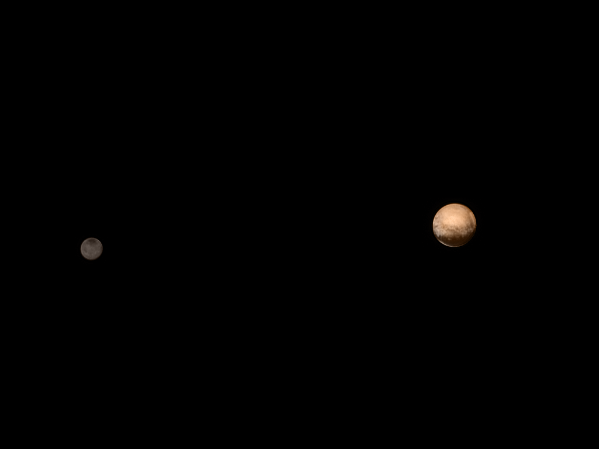

Beginners Guide to Astronomy
Natural Satellites

A natural satellite is, in the most common usage, an astronomical body that orbits a planet, dwarf planet, or small Solar System body (or sometimes another natural satellite). Natural satellites are often colloquially referred to as moons, a derivation from the Moon of Earth.
In the Solar System, there are six planetary satellite systems containing 207 known natural satellites altogether. Seven objects commonly considered dwarf planets by astronomers are also known to have natural satellites: Orcus, Pluto, Haumea, Quaoar, Makemake, Gonggong, and Eris.[1] As of November 2021, there are 442 other minor planets known to have natural satellites.